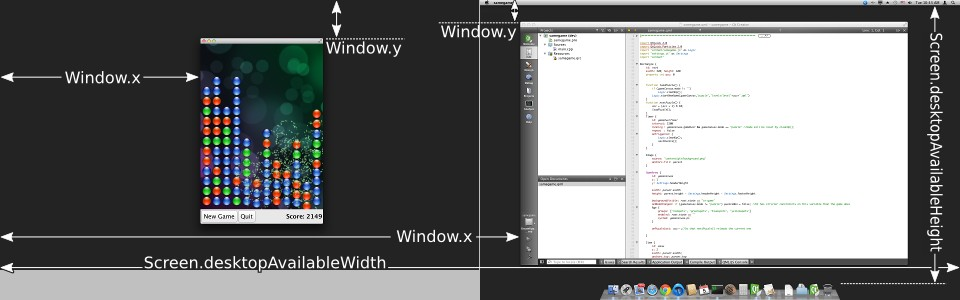

Window QML Type
Creates a new top-level window. More...
| Import Statement: | import QtQuick |
| Instantiates: | QQuickWindow |
Properties
- active : bool
- activeFocusItem : Item
- color : color
- contentItem : Item
- contentOrientation : Qt::ScreenOrientation
- data : list<QtObject>
- flags : Qt::WindowFlags
- height : int
- maximumHeight : int
- maximumWidth : int
- minimumHeight : int
- minimumWidth : int
- modality : Qt::WindowModality
- opacity : real
- palette : Palette
(since 6.0) - parent : var
(preliminary) - screen : variant
- title : string
- transientParent : QWindow
- visibility : QWindow::Visibility
- visible : bool
- width : int
- x : int
- y : int
- z : real
(preliminary)
Attached Properties
- active : bool
- activeFocusItem : Item
- contentItem : Item
- height : int
- visibility : QWindow::Visibility
- width : int
- window : Window
Signals
- afterAnimating()
- closing(CloseEvent close)
- frameSwapped()
- sceneGraphError(SceneGraphError error, QString message)
Methods
- alert(int msec)
- close()
- hide()
- lower()
- raise()
- requestActivate()
- show()
- showFullScreen()
- showMaximized()
- showMinimized()
- showNormal()
Detailed Description
The Window object creates a new top-level window for a Qt Quick scene. It automatically sets up the window for use with QtQuick graphical types.
A Window can be declared inside an Item or inside another Window, in which case the inner Window will automatically become "transient for" the outer Window, with the outer Window as its transientParent. Most platforms will show the Window centered upon the outer window in this case, and there may be other platform-dependent behaviors, depending also on the flags. If the nested window is intended to be a dialog in your application, you should also set flags to Qt.Dialog, because some window managers will not provide the centering behavior without that flag.
You can also declare multiple windows inside a top-level QtObject, in which case the windows will have no transient relationship.
Alternatively you can set or bind x and y to position the Window explicitly on the screen.
When the user attempts to close a window, the closing signal will be emitted. You can force the window to stay open (for example to prompt the user to save changes) by writing an onClosing handler that sets close.accepted = false unless it's safe to close the window (for example, because there are no more unsaved changes).
onClosing: (close) => { if (document.changed) { close.accepted = false confirmExitPopup.open() } } // The confirmExitPopup allows user to save or discard the document, // or to cancel the closing.
Property Documentation
Defines the window's position and size.
The (x,y) position is relative to the Screen if there is only one, or to the virtual desktop (arrangement of multiple screens).
Note: Not all windowing systems support setting or querying top level window positions. On such a system, programmatically moving windows may not have any effect, and artificial values may be returned for the current positions, such as QPoint(0, 0).
Window { x: 100; y: 100; width: 100; height: 100 }

Defines the window's minimum size.
This is a hint to the window manager to prevent resizing below the specified width and height.
Defines the window's maximum size.
This is a hint to the window manager to prevent resizing above the specified width and height.
active : bool |
The active status of the window.
Window { visible: true // here we use the Window.active and Window.palette ordinary properties color: active ? palette.active.window : palette.inactive.window }
See also requestActivate().
activeFocusItem : Item |
The item which currently has active focus or null if there is no item with active focus.
color : color |
The background color for the window.
Setting this property is more efficient than using a separate Rectangle.
Note: If you set the color to "transparent" or to a color with alpha translucency, you should also set suitable flags such as flags: Qt.FramelessWindowHint. Otherwise, window translucency may not be enabled consistently on all platforms.
contentItem : Item |
The invisible root item of the scene.
contentOrientation : Qt::ScreenOrientation |
This is a hint to the window manager in case it needs to display additional content like popups, dialogs, status bars, or similar in relation to the window.
The recommended orientation is Screen.orientation, but an application doesn't have to support all possible orientations, and thus can opt to ignore the current screen orientation.
The difference between the window and the content orientation determines how much to rotate the content by.
The default value is Qt::PrimaryOrientation.
See also Screen.
The data property allows you to freely mix visual children, resources and other Windows in a Window.
If you assign another Window to the data list, the nested window will become "transient for" the outer Window.
If you assign an Item to the data list, it becomes a child of the Window's contentItem, so that it appears inside the window. The item's parent will be the window's contentItem, which is the root of the Item ownership tree within that Window.
If you assign any other object type, it is added as a resource.
It should not generally be necessary to refer to the data property, as it is the default property for Window and thus all child items are automatically assigned to this property.
See also QWindow::transientParent().
flags : Qt::WindowFlags |
The window flags of the window.
The window flags control the window's appearance in the windowing system, whether it's a dialog, popup, or a regular window, and whether it should have a title bar, etc.
The flags that you read from this property might differ from the ones that you set if the requested flags could not be fulfilled.
import QtQuick Window { id: mainWindow title: "Main Window" color: "#456" property real defaultSpacing: 10 property Splash splash: Splash { onTimeout: mainWindow.show() } component Splash: Window { id: splash // a splash screen has no titlebar flags: Qt.SplashScreen // the transparent color lets background behind the image edges show through color: "transparent" modality: Qt.ApplicationModal // in case another application window is showing title: "Splash Window" // for the taskbar/dock, task switcher etc. visible: true // here we use the Screen attached property to center the splash window x: (Screen.width - splashImage.width) / 2 y: (Screen.height - splashImage.height) / 2 width: splashImage.width height: splashImage.height property int timeoutInterval: 2000 signal timeout Image { id: splashImage source: "images/qt-logo.png" } TapHandler { onTapped: splash.timeout() } Timer { interval: splash.timeoutInterval; running: true; repeat: false onTriggered: { splash.visible = false splash.timeout() } } } }
See also Qt::WindowFlags and Qt Quick Examples - Window and Screen.
modality : Qt::WindowModality |
The modality of the window.
A modal window prevents other windows from receiving input events. Possible values are Qt.NonModal (the default), Qt.WindowModal, and Qt.ApplicationModal.
opacity : real |
The opacity of the window.
If the windowing system supports window opacity, this can be used to fade the window in and out, or to make it semitransparent.
A value of 1.0 or above is treated as fully opaque, whereas a value of 0.0 or below is treated as fully transparent. Values inbetween represent varying levels of translucency between the two extremes.
The default value is 1.0.
palette : Palette |
This property holds the palette currently set for the window.
The default palette depends on the system environment. QGuiApplication maintains a system/theme palette which serves as a default for all application windows. You can also set the default palette for windows by passing a custom palette to QGuiApplication::setPalette(), before loading any QML.
Window propagates explicit palette properties to child items and controls, overriding any system defaults for that property.
import QtQuick import QtQuick.Controls Window { visible: true // here we use the Window.active and Window.palette ordinary properties color: active ? palette.active.window : palette.inactive.window // colors that are not customized here come from SystemPalette palette.active.window: "peachpuff" palette.windowText: "brown" Text { anchors.centerIn: parent // here we use the Window.active attached property and the Item.palette property color: Window.active ? palette.active.windowText : palette.inactive.windowText text: Window.active ? "active" : "inactive" } Button { text: "Button" anchors { bottom: parent.bottom bottomMargin: 6 horizontalCenter: parent.horizontalCenter } } }
This property was introduced in Qt 6.0.
See also Item::palette, Popup::palette, ColorGroup, and SystemPalette.
parent : var |
This property is under development and is subject to change.
This property holds the visual parent of the window.
The visual parent can be either another Window, or an Item.
A window with a visual parent will result in the window becoming a child window of its visual parent, either directly if the visual parent is another Window, or indirectly via the visual parent Item's window.
Just like QtQuick::Item::parent, the window will be positioned relative to its visual parent.
The stacking order between sibling Windows follows the document order, just like Items, but can be customized via the Window's z-order property.
Setting a visual parent on a Window will take precedence over the transient parent.
This property was introduced in Qt 6.7.
See also Concepts - Visual Parent in Qt Quick and transientParent.
screen : variant |
The screen with which the window is associated.
If specified before showing a window, will result in the window being shown on that screen, unless an explicit window position has been set. The value must be an element from the Qt.application.screens array.
Note: To ensure that the window is associated with the desired screen when the underlying native window is created, make sure this property is set as early as possible and that the setting of its value is not deferred. This can be particularly important on embedded platforms without a windowing system, where only one window per screen is allowed at a time. Setting the screen after a window has been created does not move the window if the new screen is part of the same virtual desktop as the old screen.
See also QWindow::setScreen(), QWindow::screen(), QScreen, and Qt.application.
title : string |
The window's title in the windowing system.
The window title might appear in the title area of the window decorations, depending on the windowing system and the window flags. It might also be used by the windowing system to identify the window in other contexts, such as in the task switcher.
transientParent : QWindow |
The window for which this window is a transient pop-up.
This is a hint to the window manager that this window is a dialog or pop-up on behalf of the transient parent. It usually means that the transient window will be centered over its transient parent when it is initially shown, that minimizing the parent window will also minimize the transient window, and so on; however results vary somewhat from platform to platform.
Declaring a Window inside an Item or another Window, either via the default property or a dedicated property, will automatically set up a transient parent relationship to the containing window, unless the transientParent property is explicitly set. This applies when creating Window items via Qt.createComponent or Qt.createQmlObject as well, as long as an Item or Window is passed as the parent argument.
A Window with a transient parent will not be shown until its transient parent is shown, even if the visible property is true. This also applies for the automatic transient parent relationship described above. In particular, if the Window's containing element is an Item, the window will not be shown until the containing item is added to a scene, via its visual parent hierarchy. Setting the transientParent to null will override this behavior:
Window { // visible is false by default Window { transientParent: null visible: true } }
In order to cause the window to be centered above its transient parent by default, depending on the window manager, it may also be necessary to set the Window::flags property with a suitable Qt::WindowType (such as Qt::Dialog).
If a visual parent is set on the Window the visual parent will take precedence over the transientParent.
See also QtQuick::Window::parent.
visibility : QWindow::Visibility |
The screen-occupation state of the window.
Visibility is whether the window should appear in the windowing system as normal, minimized, maximized, fullscreen or hidden.
To set the visibility to AutomaticVisibility means to give the window a default visible state, which might be FullScreen or Windowed depending on the platform. However when reading the visibility property you will always get the actual state, never AutomaticVisibility.
When a window is not visible, its visibility is Hidden, and setting visibility to Hidden is the same as setting visible to false.
import QtQuick import QtQuick.Controls Window { id: win flags: Qt.Window | Qt.WindowFullscreenButtonHint visibility: fullscreenButton.checked ? Window.FullScreen : Window.Windowed Button { id: fullscreenButton anchors { right: parent.right top: parent.top margins: 6 } width: height checkable: true Binding on checked { value: win.visibility === Window.FullScreen } text: "⛶" ToolTip.visible: hovered ToolTip.delay: Qt.styleHints.mousePressAndHoldInterval ToolTip.text: win.visibility === Window.FullScreen ? qsTr("restore") : qsTr("fill screen") } }
See also visible and Qt Quick Examples - Window and Screen.
visible : bool |
Whether the window is visible on the screen.
Setting visible to false is the same as setting visibility to Hidden.
The default value is false, unless overridden by setting visibility.
See also visibility.
z : real |
This property is under development and is subject to change.
Sets the stacking order of sibling windows.
By default the stacking order is 0.
Windows with a higher stacking value are drawn on top of windows with a lower stacking order. Windows with the same stacking value are drawn bottom up in the order they appear in the QML document.
Note: This property only has an effect for child windows.
See also QtQuick::Item::z.
Attached Property Documentation
These attached properties hold the size of the item's window. The Window attached property can be attached to any Item.
Window.active : bool |
This attached property tells whether the window is active. The Window attached property can be attached to any Item.
Here is an example which changes a label to show the active state of the window in which it is shown:
import QtQuick Text { text: Window.active ? "active" : "inactive" }
Window.activeFocusItem : Item |
This attached property holds the item which currently has active focus or null if there is no item with active focus. The Window attached property can be attached to any Item.
Window.contentItem : Item |
This attached property holds the invisible root item of the scene or null if the item is not in a window. The Window attached property can be attached to any Item.
Window.visibility : QWindow::Visibility |
This attached property holds whether the window is currently shown in the windowing system as normal, minimized, maximized, fullscreen or hidden. The Window attached property can be attached to any Item. If the item is not shown in any window, the value will be Hidden.
See also visible and visibility.
Window.window : Window |
This attached property holds the item's window. The Window attached property can be attached to any Item.
Signal Documentation
afterAnimating() |
This signal is emitted on the GUI thread before requesting the render thread to perform the synchronization of the scene graph.
You can implement onAfterAnimating to do additional processing after each animation step.
Note: The corresponding handler is onAfterAnimating.
closing(CloseEvent close) |
This signal is emitted when the user tries to close the window.
This signal includes a close parameter. The close.accepted property is true by default so that the window is allowed to close; but you can implement an onClosing handler and set close.accepted = false if you need to do something else before the window can be closed.
Note: The corresponding handler is onClosing.
frameSwapped() |
This signal is emitted when a frame has been queued for presenting. With vertical synchronization enabled the signal is emitted at most once per vsync interval in a continuously animating scene.
Note: The corresponding handler is onFrameSwapped.
sceneGraphError(SceneGraphError error, QString message) |
This signal is emitted when an error occurred during scene graph initialization.
You can implement onSceneGraphError(error, message) to handle errors, such as graphics context creation failures, in a custom way. If no handler is connected to this signal, Quick will print the message, or show a message box, and terminate the application.
Note: The corresponding handler is onSceneGraphError.
Method Documentation
alert(int msec) |
Causes an alert to be shown for msec milliseconds. If msec is 0 (the default), then the alert is shown indefinitely until the window becomes active again.
In alert state, the window indicates that it demands attention, for example by flashing or bouncing the taskbar entry.
close() |
Closes the window.
When this method is called, or when the user tries to close the window by its title bar button, the closing signal will be emitted. If there is no handler, or the handler does not revoke permission to close, the window will subsequently close. If the QGuiApplication::quitOnLastWindowClosed property is true, and there are no other windows open, the application will quit.
hide() |
lower() |
Lowers the window in the windowing system.
Requests that the window be lowered to appear below other windows.
raise() |
Raises the window in the windowing system.
Requests that the window be raised to appear above other windows.
requestActivate() |
Requests the window to be activated, i.e. receive keyboard focus.
show() |
Shows the window.
This is equivalent to calling showFullScreen(), showMaximized(), or showNormal(), depending on the platform's default behavior for the window type and flags.
See also showFullScreen(), showMaximized(), showNormal(), hide(), and QQuickItem::flags().
showFullScreen() |
Shows the window as fullscreen.
Equivalent to setting visibility to FullScreen.
showMaximized() |
Shows the window as maximized.
Equivalent to setting visibility to Maximized.
showMinimized() |
Shows the window as minimized.
Equivalent to setting visibility to Minimized.
showNormal() |
Shows the window as normal, i.e. neither maximized, minimized, nor fullscreen.
Equivalent to setting visibility to Windowed.